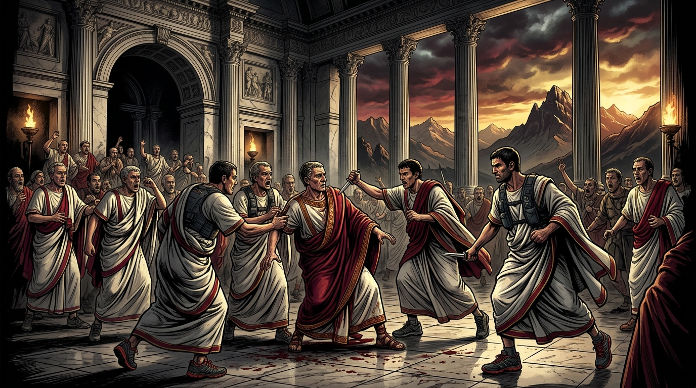

The Senate Briefing
“The fault, dear Brutus, is not in our stars, but in our complete lack of hill training, that we are
underlings.”
— Cassius (loosely paraphrased), Julius Caesar, Act I, Scene II
Inspired by the knife-like elevation profile of Mt. Coree, the stunning views over the
Cotter, and an unrelated coup d’état that occurred on the marble floor of the Roman Senate in
44 BCE, The Knife 14km, The BRuTUS 60km, and
The BTrail 100km are returning in 2027.
ULTRA Mediocre Runners of Canberra invites you to enjoy the best (and most
treacherously steep) trail races the ACT has to offer in our third edition of the Brindabella Ranges
Ultimate Trail Ultra Spectacular challenge. When Julius Caesar saw Brutus drawing a blade in the Senate,
he famously gasped, “Et tu, Brute?”—which is roughly the same noise your calves will make when
they see the gradient of Stockyard Spur and the Slippery Dip. Register now and strap yourself in for a
trail drama of Shakespearean proportions.
🏛️ SENATORIAL ARMOURY // 44 BCE EDITION
STRICTLY LIMITED SENATE ALLOCATION
The Official BRuTUS “Running Toga”
PROJECT: PLEATED VENGEANCE // HIGH-PERFORMANCE SENATORIAL DRAPE
Forget mundane technical singlets—why dress like a common plebeian when you can storm Mt.
Coree dressed like a plotting Roman Senator? Our event “T-shirt” is none other than the
legendary BRuTUS Running Toga: an over-engineered, moisture-wicking
masterpiece of neoclassical drapery tailored to survive 3,000m of vertical betrayal,
blackberry ambushes, and dramatic post-race collapses at Blue Range Hut.
⚠️ Beware the Wardrobe of October
No spare Running Togas are woven on race weekend. When the pre-dawn
ceremonial foot washing commences, the last thing you want is to be caught in ordinary
Lycra while the rest of the Senate corral is draped in imperial crimson-and-white
splendour. Secure yours during registration before the Senate treasury seals!
Aerodynamic Profile
Majestic Billowing on Genges Descent
Ventilation Index
Breezier Than the Roman Forum
Concealed Storage
Holds 4 Summit Relics (or 23 Rubber Daggers)
Et Tu Regret Factor
Catastrophic If Skipped
The Three Acts of Betrayal (The Courses)
Every conspirator must choose their weapon. Want to inspect every climb, checkpoint, and contour in
interactive 3D before race day? Head over to our dedicated
3D Course Maps & Elevation Blade Profiles page.
👑 Act I // The Ultimate Betrayal • 100km / 3,000m Elev •
20hr Limit
The BTrail (100km)
100km / 3,000m elev. • 20hr limit — “Yond Cassius has a lean and hungry look;
he
runs too much: such men are dangerous.”
The BTrail is a challenging 100km course starting at Corin Dam and finishing at
Blue Range Hut. Athletes will climb 600m up Stockyard Spur in the
first 2km as they set out on an epic journey traversing a large portion of the Brindabella Ranges.
Up on the range they will visit Mt. Ginini, Mt. Franklin (Frankie
CP1), and Mt. Aggie, collecting mystery items at the summits as
evidence of reaching these high points. Water will be available at Bendora Arboretum
WP1.
Summit Relic I
Mt. Ginini
Roof of the Range • 1,752m
Summit Relic II
Mt. Franklin
Above Frankie CP1 • 1,619m
Summit Relic III
Mt. Aggie
Rocky Outcrop • 1,474m
Summit Relic IV
Mt. Coree
The Final Climb • 1,414m
After Bulls Head CP2, runners will leave Mt. Franklin Road to join Mile
Hill Road, and descend to Warks Road. In this section runners will
traverse riverside wilderness to a water point at Warks WP2 (WARNING! Fill your bottles
here!). This leads into harsh exposed trails in managed forest with blackberry-lined
trail and the spirit-destroying climbs of Marshalls Break.
Crossing Brindabella Road at Wombat Creek CP3, athletes approach the last big climb
to the summit of Mt. Coree where they must acquire their fourth mystery object.
Athletes must carry their 4 objects for the remainder of the race.
Pacers may join their athletes at Wombat Creek CP and continue with them until the
finish. Coreezy CP4 is also an option, however we recommend not attempting to
access Coree campsite with a 2WD vehicle.
After dark departures from the final checkpoint, Knife Point CP, must be
accompanied either by a pacer or another athlete. This final section includes the descent known as
the Slippery Dip and all athletes must take particular care on this descent.
Upon finishing athletes must show their collection of 4 mystery objects to race
officials to have their time ratified. In the event that a runner is unable to display a full set of
4 objects their time will be recorded but their place will not be recognised in the official
finishing order.
🗡️ Act II // The Senatorial Conspiracy • 60km /
2,000m Elev
The BRuTUS (60km)
60km / 2,000m elev. • 11hr limit — “Not that I loved Caesar less, but that
I loved vert more.”
The BRuTUS is a 60km course starting at the historic Blue Range Hut. It follows
One Stick Road, then East West Road before crossing Brindabella Road and continuing into the
Cotter Catchment Area. Runners will pass (but not cross) Vanitys
Crossing before reaching CP1.
After CP1 runners can expect some of the smaller hills before reaching CP2 at Curries
Road where they will make the second crossing of Brindabella Road. The major climb
of the course is already visible at this point and runners will take Pabral Road into NSW, then
Coree Summit Road to the top. After summiting, runners return down the Summit
Road to Coree Campground and CP3.
What follows is a long and challenging section on Two Sticks Road, followed by
Blue Range Road. Runners briefly return to the ACT where they will reach CP4
before proceeding back over the border along Genges Trail. Off Genges Trail
lies the final obstacle, a sharp rutted Slippery Dip to Radiata Trail. Heading
south on Dead Horse Gate Road, those who have run the GUMBY will find
themselves in familiar territory before a gentle descent brings runners to the finish line at
Blue Range Hut.
🔪 Act III // The Unkindest Cut • 14km / 680m
Elev
The Knife (14km)
14km / 680m elev. • 4hr limit — “This was the most unkindest climb of
all.”
Taking in 14km of dirt track with 680m of accumulated elevation pain, The Knife
is a mediocre serve of wild radiata pine forest and blackberry. Runners will head west on Blue
Range Road before making a turn for the worst at Poo Bear Corner.
The course screws then pinches on a sharp left leading to a climb known as the Lung
Piercer. After an eternity, the Lung Piercer rejoins Blue Range Road which
continues to climb to Knife Point Aid Station where runners who refuse to
surrender will be grimly directed to the Genges Trail descent.
Here The Knife joins the BRuTUS and BTrail courses. If the Lung Piercer felt like something you
hadn’t prepared for, then at least the descent shouldn’t surprise you. Eventually the Genges
Trail flattens out and the route ahead looks like an easy run. But that’s not where
you’re going. Good luck.

Act III, Scene I // Senate Conspirators in Trail Shoes

Stockyard Spur // +600m in the Opening 2km

Mt. Coree (1,414m) // The Blade That Inspired BRuTUS

Mt. Franklin // Alpine Ridgeline & Frankie CP1

Mt. Ginini (1,752m) // Roof of the BTrail
When & Where (The Ides Coordinates)
Mark your sundials for Saturday 16 October 2027. While Julius Caesar ignored the
Soothsayer’s warning about the Ides, you definitely shouldn’t ignore these start times:
👑 The BTrail (100km)
04:00 AM • Saturday 16 October 2027
Starts at Corin Dam and finishes at Blue Range Hut, Coree ACT
(preceded by 03:00 AM bus from Lanyon Marketplace & 03:45 AM foot washing).
🗡️ The BRuTUS (60km)
07:00 AM • Saturday 16 October 2027
Starts and finishes at Blue Range Hut, Blue Range Road, Coree ACT (preceded by
06:45 AM briefing & 06:50 AM ceremonial foot washing).
🔪 The Knife (14km)
09:00 AM • Saturday 16 October 2027
Starts and finishes at Blue Range Hut, Blue Range Road, Coree ACT (briefing at
08:45 AM; camp gate locks at 09:30 AM).
Number of Entrants (The Conspirator Roster)
Even the Roman Senate had limited seating. To preserve the wilderness experience (and ensure our timers
can count everyone’s summit relics), total entrant numbers are strictly capped:
The BTrail Quota
30 Conspirators Maximum
Capped at 30 people for the 100km range traverse.
The BRuTUS Quota
60 Conspirators Maximum
Capped at 60 people for the flagship 60km loop.
The Knife Quota
60 Conspirators Maximum
Capped at 60 people for the 14km Lung Piercer.
⚠️ Senatorial Age Decree: Please be advised that athletes must be at least 18 years of age on race day.
Pricing (Senatorial Tribute)
Entry price varies depending on when you pledge allegiance to the conspiracy. Entries open on
Saturday, 15 May 2027.
Early (until 11:59pm Sun, 12 July 2027)
Standard (closes 11:59pm Sun, 3 Oct 2027)
$300
Includes 4-Relic ratification challenge and full day-into-night Brindabella odyssey.
Early (until 11:59pm Sun, 12 July 2027)
$150
Standard (closes 11:59pm Sun, 3 Oct 2027)
$190
Conquer the Cotter Catchment, Mt. Coree, Two Sticks Rd, and the Slippery Dip.
Early (until 11:59pm Sun, 12 July 2027)
$60
Standard (closes 11:59pm Sun, 3 Oct 2027)
$80
Short, sharp, and unforgiving: Poo Bear Corner, the Lung Piercer, and Genges Trail.
*UMRoC Senatorial Discount: 10% discount available for UMRoC members on all entry types.
*Campground Tribute: All camping is $12 per person per night and can be booked during
registration (numbers are limited and may book out).
*Refunds, Transfers & Event Cancellation: Full details can be found in our Event Policies HERE.
“CRY ‘HAVOC!’, AND LET SLIP THE DOGS OF TRAIL!”
Secure your bib (and your Running Toga) before the 30/60/60 entrant caps are sealed by the Senate.
Enter the Senate Portal 🗡️
The Hut, Aid Stations & Camping
Blue Range Hut will be the Race HQ and start/finish point. Like any authentic Roman
legion encampment on the frontier, the hut is a basic facility with fire pits, a BBQ, two composting
toilets, and no power or running water.
🏛️ The Hut & Water Advisory
There may be tank water at the hut, but it is not considered safe to drink.
There are no permanent rubbish bins at the site or on course—we encourage you to take your own
rubbish home, though we will put out convenience bins around the hut.
🍷 Aid Stations on Course
There will be aid stations on each course stocked with sports drink and refreshments. Please
refer to the Athlete’s Guide, the course descriptions above, and our 3D Course Maps for exact
aid station and water point locations.
⛺ Camping & Supplies
Runners and support crew are encouraged to camp ($12 per person per night, booked during
registration). Please bring food, water, toilet paper, and firewood—the nearest shops are about
a 45-minute drive away at Denman Prospect.
📜 Key Senatorial Decrees & Camp Rules
- No Pets Permitted: Please be advised that no pets are permitted at the
campsite on race weekend. Leave Caesar’s hounds at home.
- The 4 Mystery Objects (BTrail 100km): BTrail athletes must collect all 4
summit objects (Mt. Ginini, Mt. Franklin, Mt. Aggie, and Mt. Coree) and present the full set at
the finish line to have their finishing order officially ratified.
- Pacer Rules (BTrail 100km): Pacers may join their athletes at Wombat
Creek CP3 (or Coreezy CP4, though 2WD vehicles should not attempt
to access Coree campsite) and continue to the finish.
- After-Dark Knife Point Protocol: After-dark departures from the final
checkpoint, Knife Point CP, must be accompanied either by a pacer or another
athlete, taking particular care down the Slippery Dip.
- Camp Gate Lockout: On Saturday morning at 09:30 AM, the camp
gate is locked. Entry/exit after this time must be negotiated with the Race Director (parking
outside the gate after 09:30 AM).
The Schedule (Times TBC)
“The Ides of October are come.” — “Ay, Caesar; but not gone.” Here is how the three-day tragedy
unfolds:
12:30
Event check-in opens at The Runners Shop, Phillip
(bring your ID).
15:00
Blue Range Hut Camp gate opens.
15:30
BTrail check-in closes at The Runners Shop.
20:00
Camp gate closes (for the night).
03:00
BTrail bus departure from Lanyon Marketplace.
03:45
Ceremonial Foot Washing (BTrail).
03:50
Race briefing (BTrail).
04:00
👑 RACE START — THE BTRAIL (100KM) at Corin Dam.
05:30
Blue Range Hut Campground gate opens.
05:45
Event check-in opens (The Knife and BRuTUS).
06:14
Sunrise over the Brindabellas.
06:40
Event check-in closes (BRuTUS).
06:45
Race briefing (BRuTUS).
06:50
Ceremonial Foot Washing (BRuTUS).
07:00
🗡️ RACE START — THE BRuTUS (60KM) at Blue Range
Hut.
08:40
Event check-in closes (The Knife).
08:45
Race briefing (The Knife).
09:00
🔪 RACE START — THE KNIFE (14KM) at Blue Range
Hut.
09:30
Camp gate locked (entry/exit after this time to be negotiated with Race
Director — parking outside gate after this time).
12:00 (+/- 15m)
The Knife presentations.
13:00
The Knife cut-off time (4 hours).
14:00 (+/- 15m)
BRuTUS presentations.
18:00
BRuTUS cut-off time (11 hours) & BTrail presentations.
18:01
BRuTUS and The Knife campground after-party begins as remaining BTrail
finishers come in.
19:13
Sunset.
19:14
The party continues.
00:00
BTrail cut-off time (20 hours).
10:00
Campground closes. If you wish to camp Monday night you will need to
book directly through the ACT Government website.
Event Sponsors
The Runners Shop is Canberra’s one-stop shop for all your running needs. Stop by at 76
Dundas Court, Phillip for the ACT’s best advice on all things running, or find them online at
The Runners Shop.